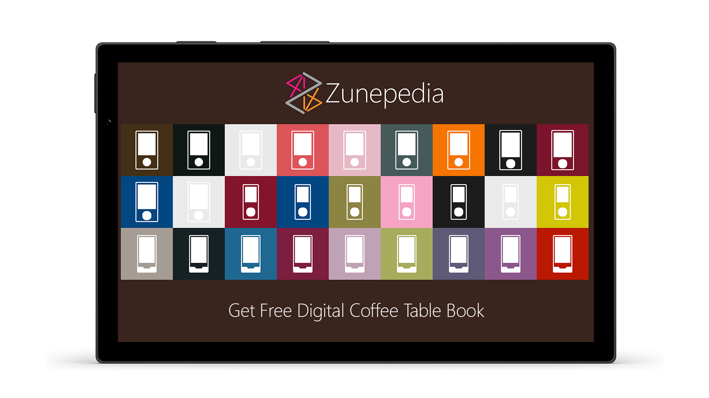
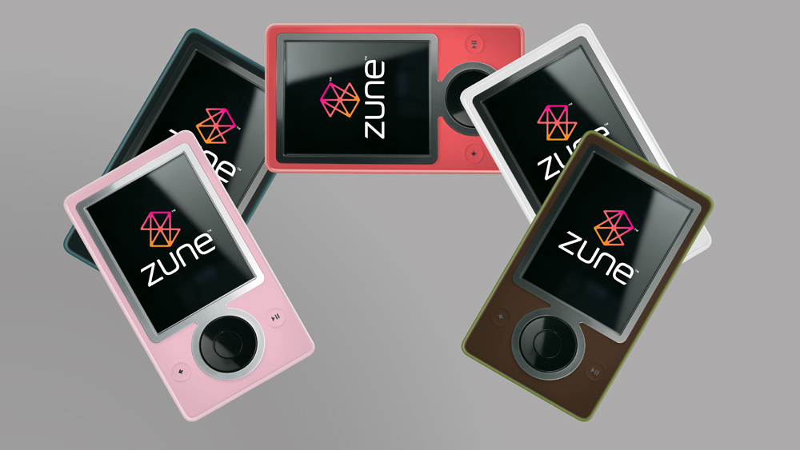
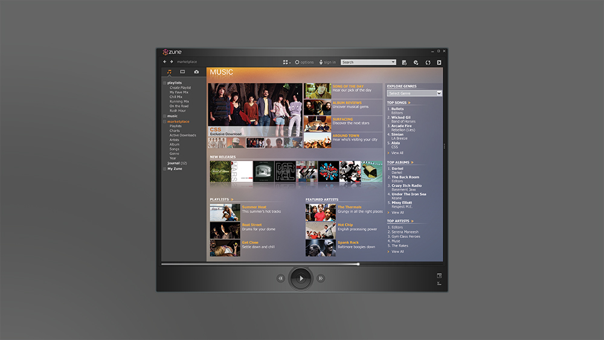
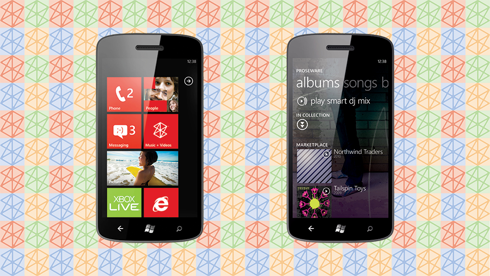
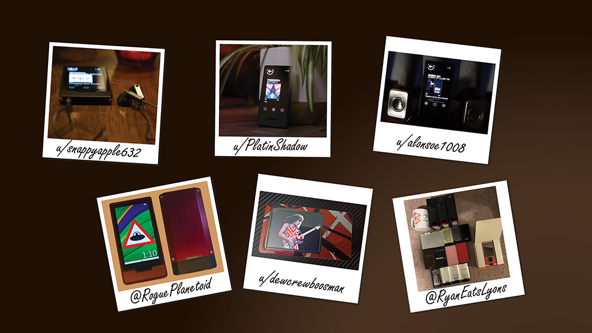
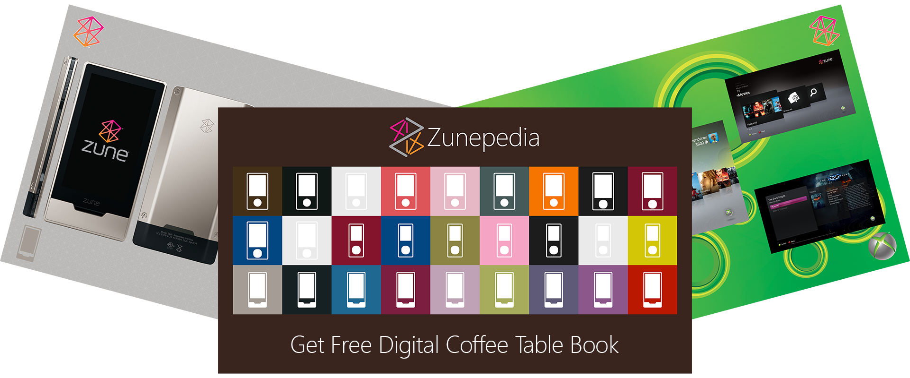
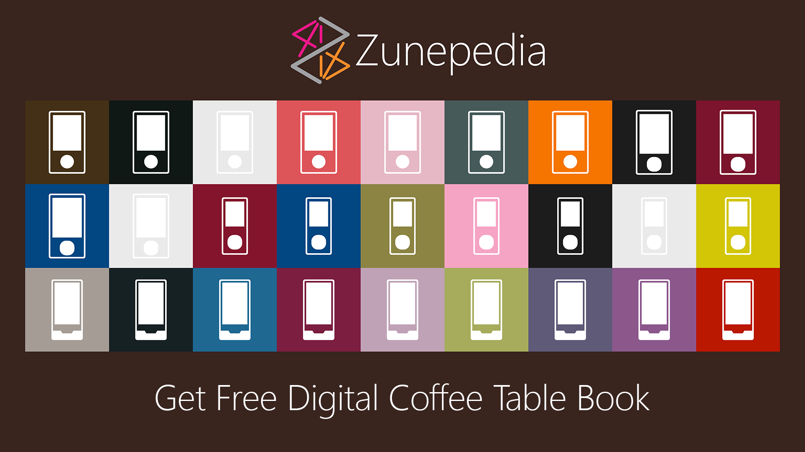

Zune Digital Coffee Table Book
Unofficial photographic journey of the history of the Zune devices, hardware, services and the community that keeps it alive to this day

10.5MB PDFHardware
Look at beautifully arranged photos of the Zune hardware.

Platform
See software and social elements of the Zune music platform.

Entertainment
View Zune digital entertainment services on Xbox and Windows Phone.

Community
Discover how Zune lives on with support & collections in the community.


10.5MB PDFFeatures
Zune 30GB
See the device that started it all off and see it from various angles.
Zune 80GB | 120GB
Find out about the second generation device with unique touch button controls.
Zune 4GB | 8GB | 16GB
Have a look at the slimmer ultra-portable device and lifestyle photography.
Zune HD
Learn about this ultra premium although final device featuring an OLED touch-screen.
Overview
Zune was first released twenty years ago when Microsoft first entered the personal media space in 2006,
when they went against the competition at the time with their own digital music player and services, where the
first-generation brought the iconic and usual for a device colour of brown, along with other colours.
A year later in 2007 brought the second-generation of Zune with a more capable and larget capacity device
and a more portable device available in many colours. It was also possible to purchase laser-engaved devices
through Zune Originals. Along with these new devices came new services such as Zune Social
which brought Zune Cards whic allowed Zune owners to shair their music interests or
discover new music on whe web, on or between the new Zune devices.
A couple of years later in 2009 the third-generation of Zune hardware was released with the Zune HD,
which features a multi-touch OLED screen in a stunning ultra-premium form factor that wouldn't look out of place
today available in many colours and laser-engraving via Zune Originals. Although a few years later the
Zune hardware would be discontinued but it did live on for a while longer as the digital entertainment
brand for Xbox and Windows Phone. There's little trace of Zune today exceptr for some of
the design language used in Microsoft products such as Windows.
Zune does live on in a way, with the community of owners keeping it going and sharing their passion for
these amazing devices and software. Zunepedia is a digital coffee table book which showcases Zune
including the devices, software and services along with photos of collections from the community. Zunepedia
aims to bring both nostalgia to long-time fans and show them off to those just discovering Zune who were
not lucky enough to experience it the first time around!
About
I'm a software developer from the UK and a keen fan of anything Microsoft, I've made sure to get every Xbox console
from the original Xbox to the Xbox Series X but when I heard about Zune twenty years ago in 2006 I knew I
wanted one. Zune was never officially released in the UK but I managed to get a Zune 80GB, they would remain a
rare sight even in North America where they were released but even more so in the UK. I took mine to many events and even
helped someone from Microsoft get the Podcasts feature to work in the UK. A few years later in 2009 I heard about
the Zune HD and was able to get one thanks to a kind person from California who was able to purchase a red Zune HD
from Zune Originals and even though the import tax and duty almost doubled the price I loved it and still use it when
travelling here in the UK!
When Windows Phone was announced in 2010, the Zune services were a key feature but one feature that was never made
available was Zune Cards part of Zune Social where you could discover or share what people were listening to, so
I decided to create ZuneCardr which brought this functionality to Windows Phone and later even allowed people to
listen to full music tracks with their Zune Pass, helping it gain over 333,000 downloads!
I also ran a website which also covered Zune featuring press releases, device information and images - many of which are
used in Zunepedia that I gathered from Microsoft sources including early looks a hardware like Zune HD
which I was able to publish once it was released, around then I attended an event in London and I asked the then CEO of
Microsoft, Steve Ballmer if Zune was every coming to the UK and he replied "No" and added "It's all about the
phone now", that was the first time Microsoft confirmed that and signalled the beginning of the end of Zune
for both the hardware and as a digital entertainment brand, although they rebranded those also closed ending over two-decades
of digital entertainment services from Microsoft.
Today there is still an active community of Zune owners including myself who share their passion, many of which have
rare devices along with accessories and other related paraphernalia. Zunepedia exists not only thanks to them but
because of the collection of assets for Zune I had collected and hope this digital coffee table book not only brings
delight to those part of the commuunity but also allows people to discover Zune for the first time and celebrate five
years since the original publication of Zunepedia which was an epic undertaking for a non-designer and non-author to do.
Peter Bull

10.5MB PDFAll donations via Buy Me a Coffee are donated to The Cyber Helpline which provides free, expert help for victims of cybercrime, digital fraud & online harm.